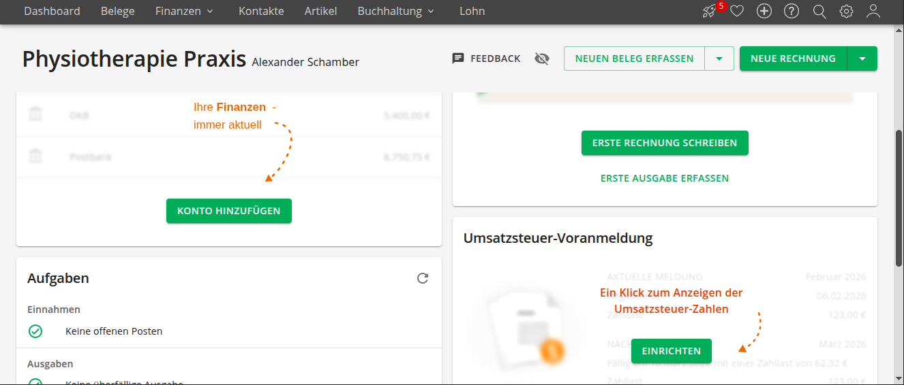

Ich helfe Therapeuten und Heilpraktikern, ihre Buchhaltung mit Lexware & Elster selbst in die Hand zu nehmen. Remote-Support auf Augenhöhe – direkt aus der Praxis-Erfahrung.

Lexware Office automatisiert Ihren Bank-Abgleich und speichert Belege GoBD-konform. Als ehem. Physio habe ich das System erfolgreich für meine eigene Transparenz genutzt.
ELSTER ist die offizielle digitale Brücke zum Finanzamt. Wir richten die direkte Schnittstelle ein, damit Ihre Meldungen rechtssicher und verschlüsselt übertragen werden.
Jeder arbeitet anders. Mir ist wichtig, dass Sie genau den Rückhalt bekommen, den Sie brauchen.
Für alle, die die Fäden selbst in der Hand halten wollen. Gewinnen Sie die Freiheit zurück, Ihre Praxis-Finanzen eigenständig zu steuern.
Buchhaltung muss sich nicht einsam oder bedrohlich anfühlen. Ich schaffe ein stabiles Fundament, auf dem Sie sich jederzeit sicher fühlen können.
Ich war von 2019 bis Ende 2024 als Physiotherapeut selbstständig. In den letzten zwei Jahren meiner Praxiszeit habe ich meine Buchhaltung komplett auf ein digitales System umgestellt.
Dadurch wurden meine Finanzen endlich transparent. Ich gewann die Unabhängigkeit vom Steuerberater für die laufenden Aufgaben und konnte meine Meldungen selbst bearbeiten. Diesen Prozess begleite ich heute bei meinen Kollegen.
Digitalisierung endet nicht bei der Buchhaltung. Als optionale Erweiterung unterstütze ich Sie dabei, eine **lokale KI** auf Ihrem Praxis-Rechner einzurichten – ohne Cloud und zu 100% datenschutzkonform. Durchsuchen Sie Ihre Fachliteratur & PDFs in Sekunden.
Einmaliges Setup & 12 Monate Begleitung bis zum ersten eigenständigen Abschluss.
Keine Anzahlung nötig – Rechnung erst nach Setup.
Hinweis: Schamber Praxis Digitalisierung bietet technische Unterstützung an. Keine Steuerberatung.
Remote-Support via AnyDesk & WhatsApp Call oder direkt über Satellite.
Hinweis: Gerne auch via WhatsApp erreichbar. Beste Erreichbarkeit vormittags.